Prévoir au moins deux moyens de navigation parmi un menu principal, un plan du site et un
moteur
de recherche - navigation générale
🌐 12.1, 12.2, 12.3, 12.4, 12.5
📱 N\A
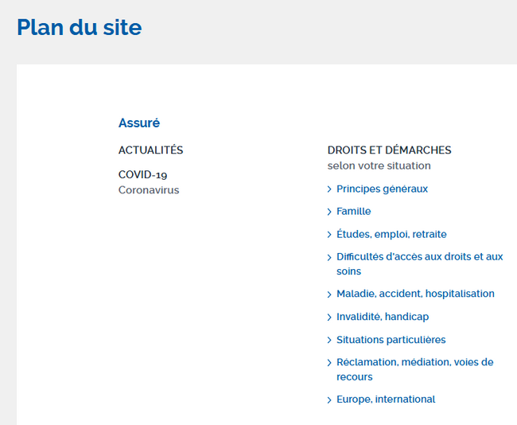
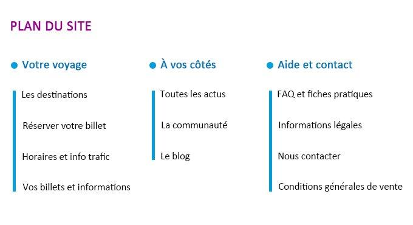
Exemples de plans du site.
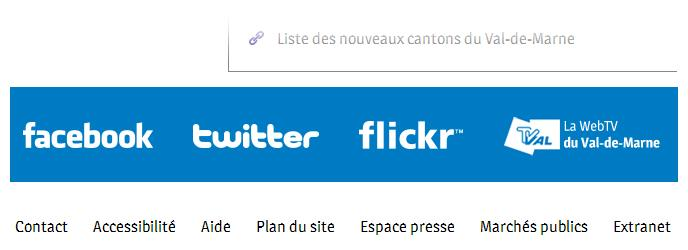
Exemple d’un lien vers le plan du site situé en pied de page.
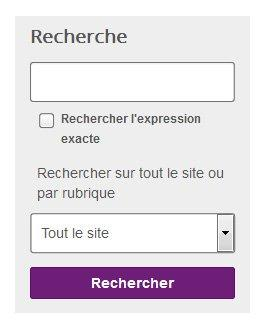
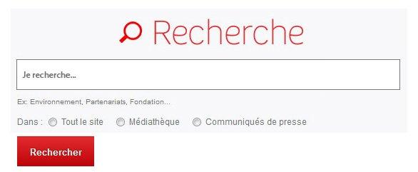
Si nécessaire, il est possible de prévoir des filtres sur le moteur de recherche pour ne pas
proposer seulement une recherche globale.
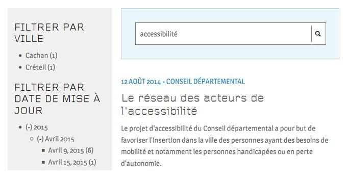
Extrait d’une page de résultats de recherche filtrés par date.
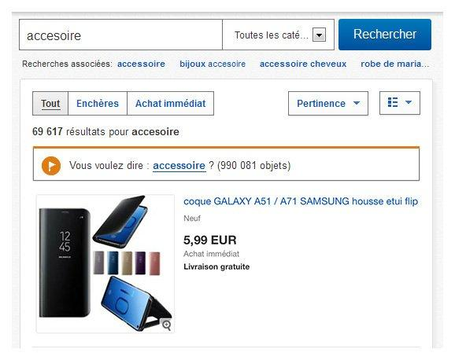
La présence de suggestions de correction est une bonne pratique d’accessibilité.
[Bonne pratique] Prévoir un fil d’Ariane - Navigation générale
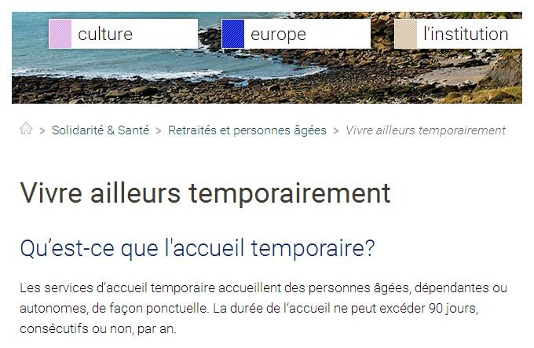
Exemple d’un fil d’Ariane.
Indiquer visuellement la page en cours de consultation dans les systèmes de navigation
- navigation générale
🌐 3.1
📱 2.1
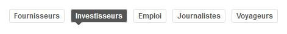
Dans ce premier exemple d’un menu, des couleurs de texte et de fond différentes ainsi qu’une
flèche tournée vers le bas marquent la rubrique courante (« Investisseurs »).
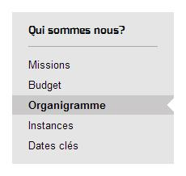
Dans ce second exemple d’un menu, une couleur de fond différente ainsi qu’une mise en gras
et une encoche marquent la page courante (« Organigramme »).
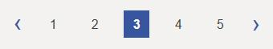
Dans cet exemple d’une pagination, des couleurs de texte et de fond différentes ainsi qu’une
mise en gras marquent la page courante (« 3 »).
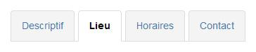
Dans cet exemple d’un système d’onglets, des couleurs de texte et de fond différentes ainsi
qu’une mise en gras marquent l’onglet courant (« Lieu »).
Dans cet exemple d’un système de navigation dans un carrousel d’actualités, une pastille de
couleur et de taille différentes marque le panneau courant.
Ne pas utiliser la couleur comme seule source d'information
- Couleurs et contrastes
🌐 3.1
📱 2.1
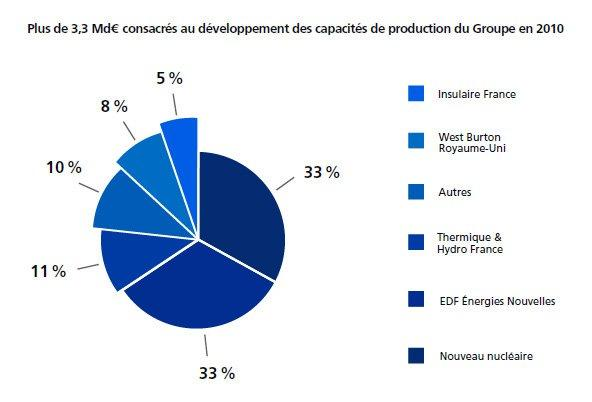
Dans ce premier exemple, l’information véhiculée par le camembert n’est plus compréhensible
sans couleur.
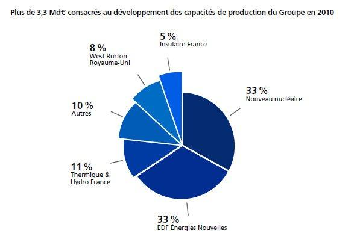
Tandis que cette version du camembert reste compréhensible même sans couleur.
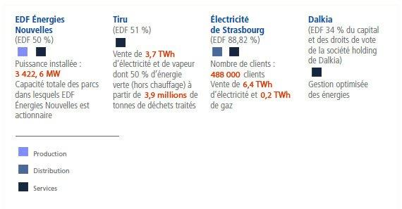
Dans ce premier exemple, des carrés de couleurs différentes sont utilisés pour la légende.
L’information n’est véhiculée que par ce moyen.
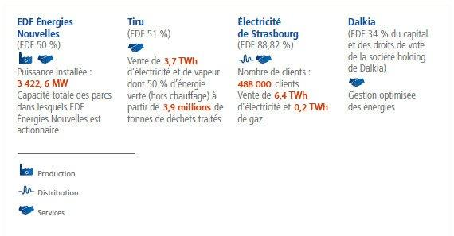
Tandis que dans cette version, les carrés de couleurs ont été remplacés par des
pictogrammes. Ce qui permet de rendre compréhensible l’information même en l’absence de
couleurs.
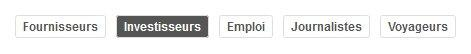
Dans ce premier exemple d’un menu de navigation, l’information de la position courante
(« Investisseurs ») n’est véhiculée que par le changement de la couleur de fond.
Tandis que dans cette version, l’ajout d’une flèche tournée vers le bas permet de rendre
compréhensible l’information même en l’absence de couleurs.
Dans ce premier exemple d’un système de navigation dans un carrousel, l’information de la
pastille courante n’est véhiculée que par le changement de couleur.
Tandis que dans cette version, le rétrécissement de la pastille courante permet de rendre
compréhensible l’information même en l’absence de couleurs.
Assurer un contraste suffisant entre les textes et l’arrière-plan
- Couleurs et contrastes
🌐 3.2
📱 2.2
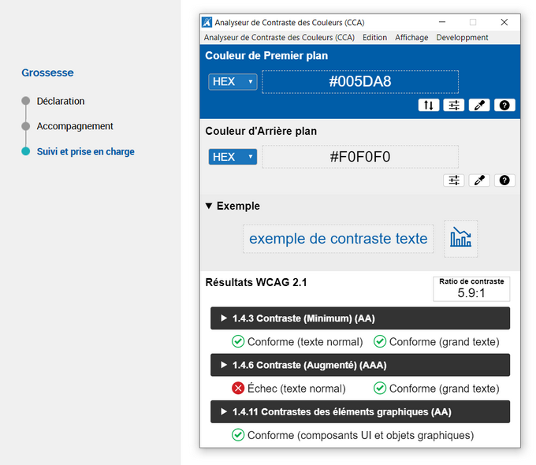
D’après cet outil, les textes bleus sur fond gris possèdent un rapport de contraste
suffisant.
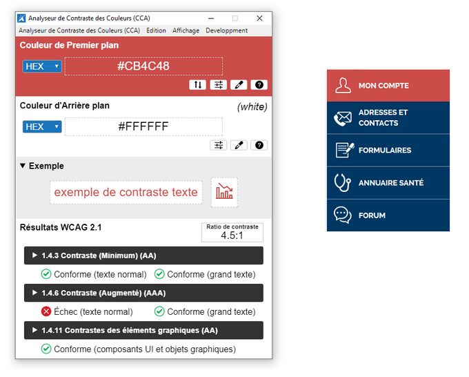
Toujours d’après cet outil, l’entrée de menu « Mon compte » en blanc sur fond rouge pâle
possède un rapport de contraste suffisant.
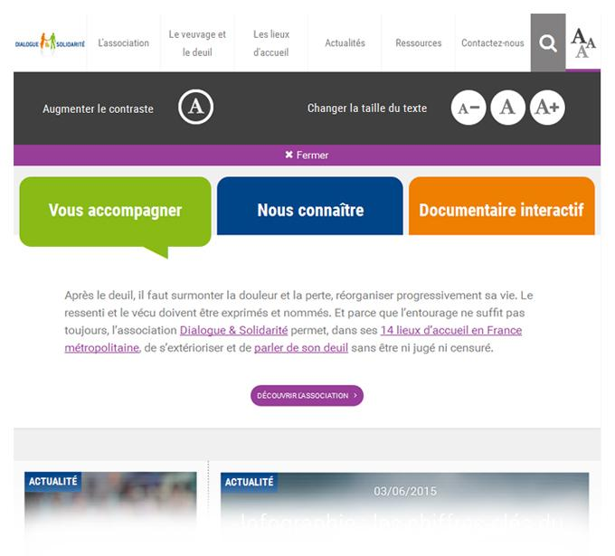
Dans cet exemple, une charte graphique alternative suffisamment contrastée est activable
depuis un bouton « Augmenter le contraste ».
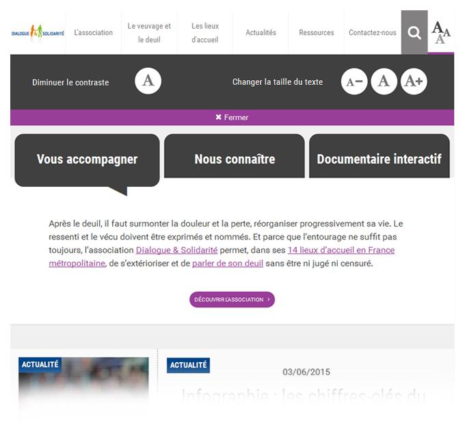
Une fois ce bouton « Augmenter le contraste » cliqué, il se transforme en un bouton
« Diminuer le contraste ».
Assurer un contraste suffisant entre les éléments graphiques informatifs et interactifs
avec leur arrière-plan
- Couleurs et contrastes
🌐 3.3
📱 2.3
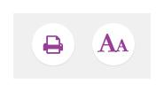
Exemples de pictogrammes interactifs suffisamment contrastés.
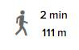
Exemple de pictogramme informatif suffisamment contrasté.
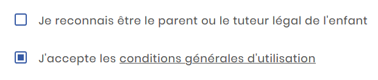
Exemples de cases à cocher suffisamment contrastées.
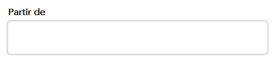
Exemple de champ de texte insuffisamment contrasté.
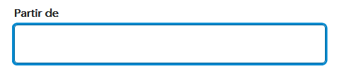
Exemple de champ de texte suffisamment contrasté.
Prévoir une alternative pour chaque CAPTCHA uniquement visuel
- images
🌐 1.4, 1.5
📱 1.4, 1.5
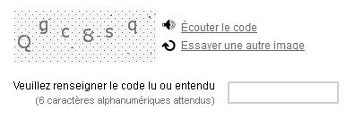
Dans ce CAPTCHA, le lien « Écouter le code » permet d’accéder à une version audio du CAPTCHA
tandis que le lien « Essayer un autre code » permet d’obtenir une nouvelle image si celle-ci
est difficilement lisible.
Prévoir un moyen d’accès à la description détaillée de chaque image complexe
- images
🌐 1.6, 1.7
📱 1.6, 1.7
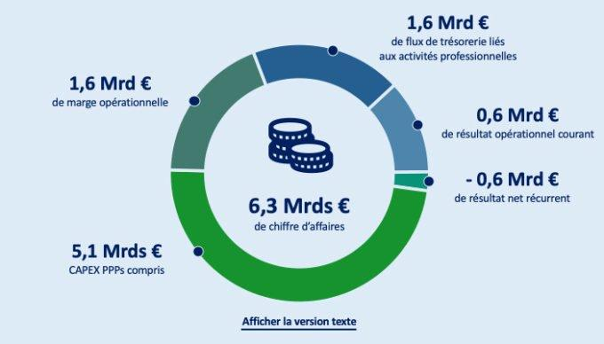
Cette infographie est porteuse d’informations complexes. Un bouton « Afficher la version
texte » permet d’afficher une description détaillée de ce contenu riche.
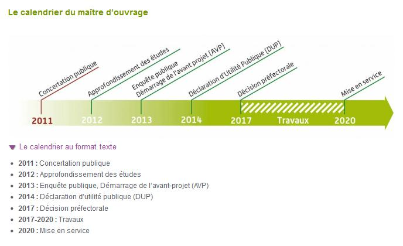
Ce calendrier est une image porteuse d’informations complexes. Un bouton « Le calendrier au
format texte » permet d’afficher une description détaillée de ce contenu riche.
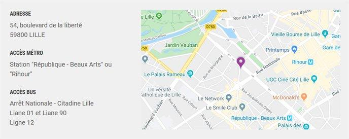
Cette carte porteuse d’informations est accompagnée d’une alternative textuelle indiquant
l’adresse ainsi que les stations de métro et lignes de bus proches du lieu géolocalisé.
Prévoir un titre pour chaque tableau de données
- Tableaux
🌐 5.4
📱 4.3
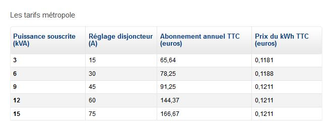
Exemple d’un titre de tableau de données.
Prévoir un intitulé explicite pour chaque lien et bouton
- liens
🌐 6.1
📱 5.1
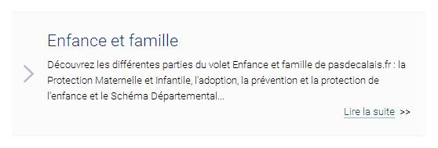
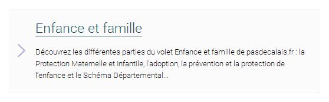
Dans cet exemple, le lien « Lire la suite » a été retiré et directement placé sur le titre
de l’article.
Différencier visuellement les liens présents dans du texte
- liens
🌐 10.6
📱 8.3
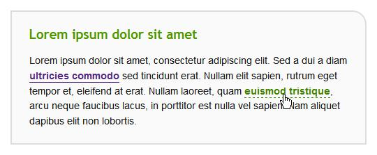
Exemple d’une différenciation visuelle via soulignement entre un lien et son texte
environnant.
[Bonne pratique] Indiquer la langue de chaque document en téléchargement rédigé dans une
langue étrangère
- liens
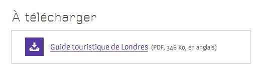
Exemple d’indication de la langue d’un document PDF.
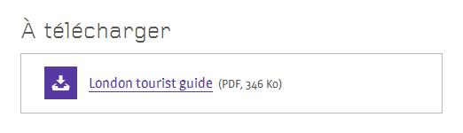
[Bonne pratique] Indiquer le format et le poids de chaque fichier à télécharger
- liens
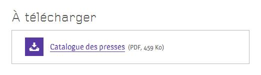
Exemple d’indication du format et du poids d’un document PDF.
Permettre à l'utilisateur de choisir l'orientation de l'écran
- Orientation et taille d’écran
🌐 13.9
📱 11.9
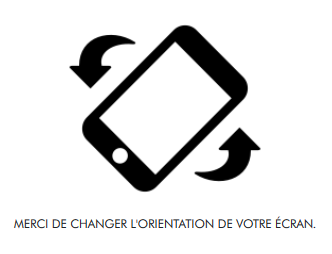
Cet exemple n’est pas conforme car l’accès à la page est bloqué par un message « Merci de
changer l’orientation de votre écran » qui force la personne à modifier l’orientation de son
écran pour continuer sa navigation.
Concevoir l’interface de manière responsive
- orientation et taille d’écran
🌐 10.11
📱 N/A
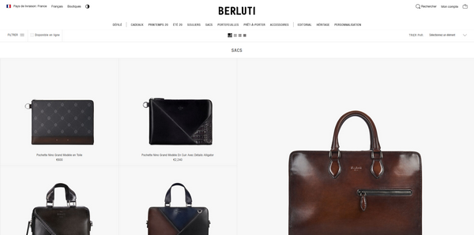
Illustration d’une vue sur desktop.
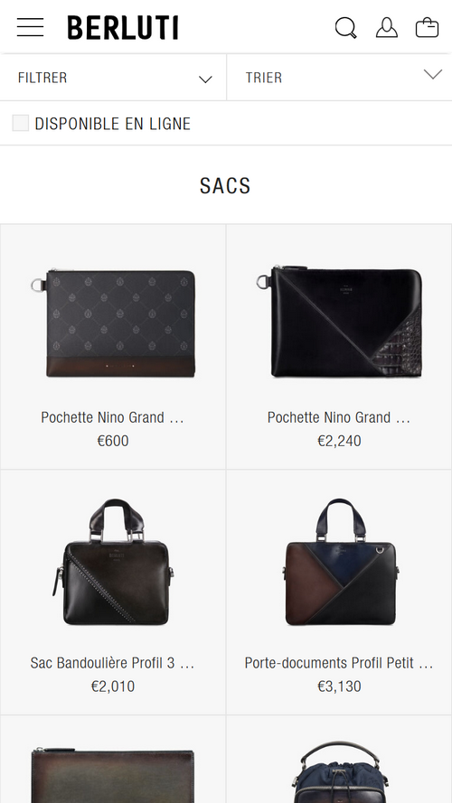
Illustration de la même vue sur mobile.
Ne pas supprimer de fonctionnalités ou de contenus en vues responsive
- orientation et taille d’écran
🌐 10.11
📱 N/A
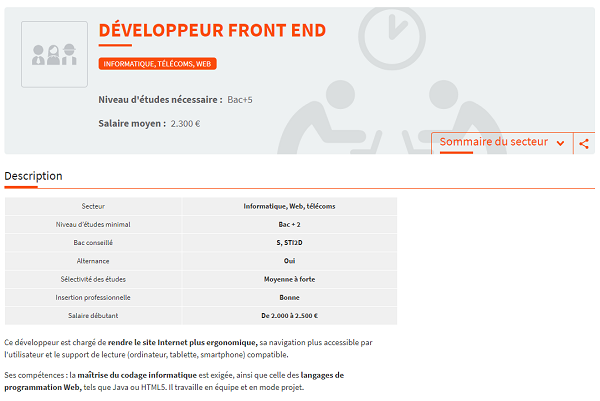
Dans la version desktop de cette page, un sommaire, un bouton de partage et un tableau
récapitulatif sont disponibles.
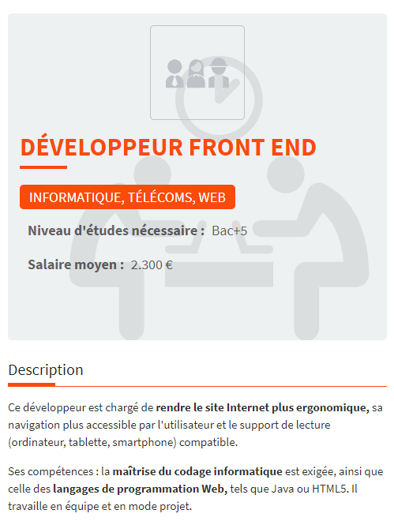
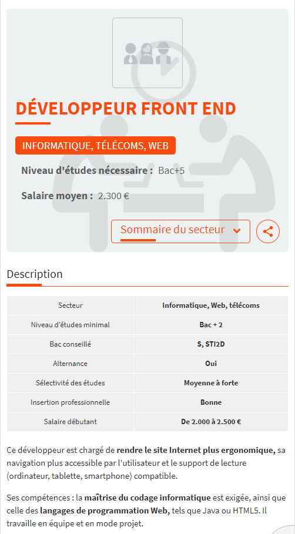
Le sommaire, le bouton de partage et le tableau récapitulatif doivent donc également être
disponibles dans la version mobile.
Prévoir un moyen pour contrôler la durée de la session - temps de consultation
🌐 13.1
📱 11.1
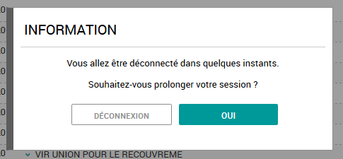
Avant la fin de validité de la session en cours, ce site propose une fonctionnalité qui
permet d’en prolonger la durée.
Prévoir un moyen pour contrôler les rafraîchissements automatiques
- temps de consultation
🌐 13.1
📱 N/A
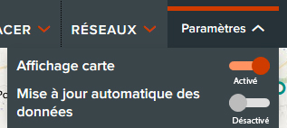
Ce site propose une fonctionnalité « Mise à jour automatique des données » qui permet
d’activer ou de désactiver les rafraîchissements automatiques du site.
Prévoir un intitulé explicite pour chaque champ de formulaire
- formulaires
🌐 11.1, 11.2
📱 9.1, 9.3
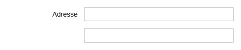
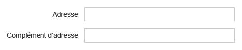
Dans cet exemple, un libellé a été ajouté au champ prévu pour la seconde ligne de l’adresse.
Dans cet exemple de champ de recherche, un bouton « Rechercher » compense l’absence
d’intitulé textuel.
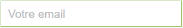
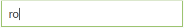
Positionner chaque intitulé à proximité de son champ
- formulaires
🌐 11.4
📱 9.4
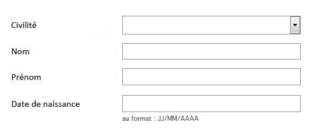
Dans cet exemple, les intitulés ont été alignés à droite afin d’être positionnés à proximité
de leurs champs respectifs.
Dans cet exemple, les intitulés sont positionnés immédiatement au-dessus de leurs champs de
formulaire respectifs.
Dans cet exemple, la case à cocher est positionnée immédiatement à gauche de l’intitulé.
Prévoir des intitulés identiques pour les champs dont la fonction est identique
- formulaires
🌐 11.3
📱 9.3
Dans cet exemple, quel que soit l’onglet, les intitulés des champs de formulaire « Départ
* » et « Arrivée * » sont identiques. Une mauvaise pratique aurait été d’avoir par exemple
« Arrivée * » sous un onglet et « Destination * » sous le second.
Regrouper et titrer les champs de même nature
- formulaires
🌐 11.5, 11.6
📱 9.6
Dans cet exemple, les champs sont regroupés en plusieurs zones : « Où et quand
souhaitez-vous partir ? » et « Qui participe à ce voyage ? ». Les informations de même
nature concernant les voyageurs sont également titrées par « Voyageur 1 » et « Voyageur 2 ».
Indiquer clairement les champs obligatoires
- formulaires
🌐 11.10
📱 9.7
Dans cet exemple, les champs obligatoires sont annoncés par un astérisque dont la
signification est annoncée au début du formulaire via une mention «
* champs obligatoires
».
Prévoir des aides à la saisie
- formulaires
🌐 11.10
📱 9.8
Dans cet exemple, les exigences de complexité de son mot de passe sont indiquées à proximité
du champ.
Dans cet exemple, le format attendu pour la date de départ est indiqué à proximité du champ.
Dans cet exemple, les informations concernant le format et le poids maximum de l’image
attendue sont précisées avant l’envoi.
Prévoir des messages d’erreur explicites et des suggestions de correction
- formulaires
🌐 11.11
📱 9.9, 9.10
Dans les deux exemples ci-dessus, les messages d’erreur sont explicites et accompagnés de
suggestions de correction (format de courriel).
Prévoir un intitulé explicite pour chaque bouton de formulaire
- formulaires
🌐 11.9
📱 9.5
Dans cet exemple, l’intitulé de bouton « Valider » a été remplacé par « Rechercher » car
plus précis.
Dans cet exemple, un bouton-image représentant une loupe est utilisé. Il sera rendu
accessible en phase technique.
[Bonne pratique] Positionner un bouton de soumission à la fin de chaque formulaire
- formulaires
Sur ce premier exemple, les options « Ajouter une étape » et relatives à la date de départ
sont positionnées après le bouton de soumission « Rechercher ».
Par conséquent, certaines personnes peuvent passer à côté de ces options.
C’est pourquoi il est important de placer le bouton de soumission à la fin du formulaire,
comme dans ce second exemple.
C’est par exemple le cas pour une liste déroulante qui permet de trier une liste
d’événements par année car l’action est déclenchée dynamiquement.
[Bonne pratique] Permettre de revenir en arrière sur les formulaires à étapes multiples
- formulaires
Trois étapes sont annoncées dans ce formulaire. L’étape en cours est indiquée par une mise
en gras ainsi que des couleurs de texte et de fond différentes.
L’intitulé de l’étape 1 permet de revenir sur ses pas depuis les étapes suivantes.
[Bonne pratique] Prévoir un récapitulatif avant la soumission finale des formulaires à étapes
multiples
- formulaires
Après avoir renseigné le formulaire, un récapitulatif est fourni et donne la possibilité de
modifier les informations avant de payer ses achats.
[Bonne pratique] Prévoir un message de confirmation
- formulaires
Suite à l’envoi d’un message, une confirmation clairement mise en évidence apparaît à
l’écran.
Permettre à l'utilisateur de contrôler les animations - animations
🌐 13.8
📱 11.8
Ce carrousel animé dispose d’un bouton de mise en pause du mouvement.
Cette fonctionnalité permet d’activer ou de désactiver en une seule action l’ensemble des
animations du site.
Prévoir un titre et/ou un résumé pour chaque vidéo et contenu audio
- player
🌐 4.7
📱 3.11
La vidéo ci-dessus est accompagnée d’un titre et d’un court texte de présentation.
Le contenu audio ci-dessus est accompagné d’un titre et d’un court texte de présentation.
Prévoir un moyen d’accès à la transcription textuelle de chaque vidéo et contenu audio -
player
🌐 4.1
📱 3.1
Exemple d’une transcription textuelle disponible directement sous la vidéo s’affichant au
clic sur le bouton « Lire la transcription ».
Exemple de liens de téléchargement de transcription textuelle d’une vidéo.
Exemple d’un lien vers la transcription textuelle d’un contenu audio.
Prévoir des moyens pour contrôler la lecture et le son de chaque vidéo et contenu
audio
- player
🌐 4.11, 4.13
📱 3.13
Ces exemples de lecteurs audio et vidéo sont conformes car ils proposent les boutons
suivants : lecture/pause, activation/désactivation du son et contrôle du volume.
Prévoir un moyen d’afficher les sous-titres en garantissant leur lisibilité
- player
🌐 3.2, 4.3
📱 3.7
Le bouton « ST » (pour Sous-Titres) permet ici d’activer les sous-titres. On retrouve
également souvent le pictogramme « CC » (pour
Closed Caption
).
Une couleur de police blanche aux contours noirs permet par exemple de garantir la
lisibilité dans tous les contextes.
Un arrière-plan opaque ou semi-transparent permet également d’assurer une bonne lisibilité
du texte.
Permettre à l'utilisateur de personnaliser l'affichage des sous-titres - player
Capture d'écran d'une interface utilisateur pour personnaliser les sous-titres sur un lecteur vidéo. L'interface contient des options comme la position des sous-titres, la police, la taille de la police, la couleur du texte, et l'arrière-plan. Il y a également des boutons "Enregistrer" et "Annuler".
Prévoir un moyen d’activer l’audiodescription - player
Le bouton « AD » (pour AudioDescription) permet ici d’activer l’audiodescription.
Rendre désactivables ou reconfigurables les raccourcis clavier à une touche - player